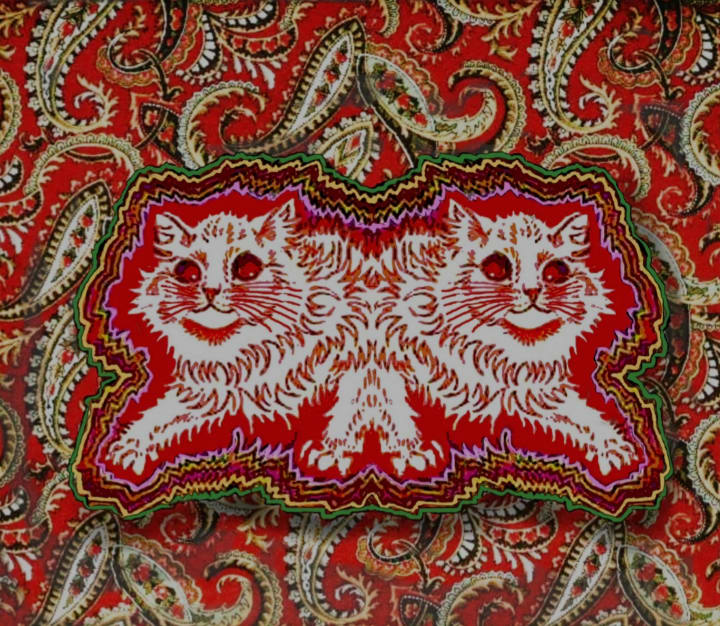

Primeros años
Louis William Wain nació el 5 de agosto de 1860 en Clerkenwell, Londres, Reino Unido. Era el mayor de seis hijos y el único varón. Su padre era comerciante textil y su madre, de origen francés, trabajaba haciendo bordados para iglesias. Desde pequeño mostró una gran curiosidad por los animales, especialmente los gatos, que se convertirían más tarde en el centro de su obra.
Formación y primeros trabajos
Estudió en el West London School of Art, donde luego trabajó como maestro asistente. Su carrera comenzó como ilustrador freelance para periódicos y revistas, donde su estilo detallado y expresivo le valió reconocimiento.
En 1884 se casó con Emily Marie Richardson, pero poco después ella enfermó gravemente. Durante su enfermedad, adoptaron un gato llamado Peter, que inspiró las primeras ilustraciones de gatos con rasgos humanos: sonrientes, juguetones y con actitudes sociales. Estas imágenes marcaron un antes y un después en la representación de los felinos.
Dificultades personales
A pesar de su fama, Wain atravesó grandes dificultades económicas, en parte porque vendía sus derechos de autor muy baratos y debía mantener a su madre y hermanas tras la muerte de su padre. Su carácter sensible y su inestabilidad emocional afectaron su vida personal y profesional.
Hacia 1917, fue diagnosticado con esquizofrenia (aunque este diagnóstico ha sido discutido por historiadores). En 1924 fue internado en el hospital psiquiátrico de Springfield, en condiciones precarias, hasta que una campaña pública promovida por amigos —entre ellos el escritor H. G. Wells— permitió su traslado a hospitales con mejores condiciones.
Últimos años y legado
Durante sus últimos años, su arte se transformó profundamente: sus gatos se volvieron figuras caleidoscópicas, llenas de patrones vibrantes y psicodélicos. Muchos interpretaron esto como una manifestación de su mente cambiante, aunque otros consideran que fue una evolución artística intencional y vanguardista.
Louis Wain falleció el 4 de julio de 1939 en el Hospital Napsbury, Hertfordshire, dejando un legado que sigue inspirando a artistas y amantes del arte hasta hoy.
Datos rápidos
- Nacimiento: 5 de agosto de 1860
- Fallecimiento: 4 de julio de 1939
- Nacionalidad: Británica
- Ocupación: Ilustrador y pintor
- Temas: Gatos antropomorfos, arte expresivo


Curiosidades
- Fue presidente de la National Cat Club de Londres.
- Popularizó la figura del gato doméstico en la cultura inglesa.
- Sus obras aparecieron en más de 200 revistas y libros.
- El escritor H. G. Wells lo llamó “el hombre que inventó los gatos.”